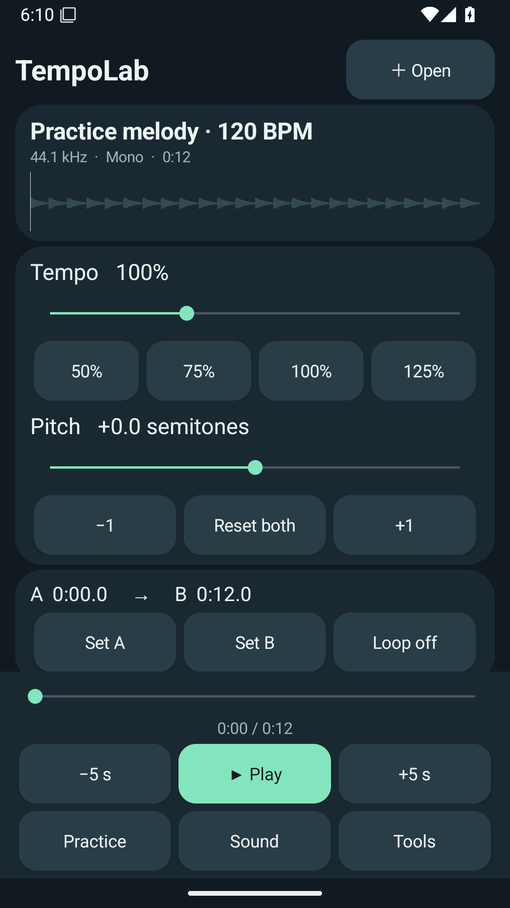
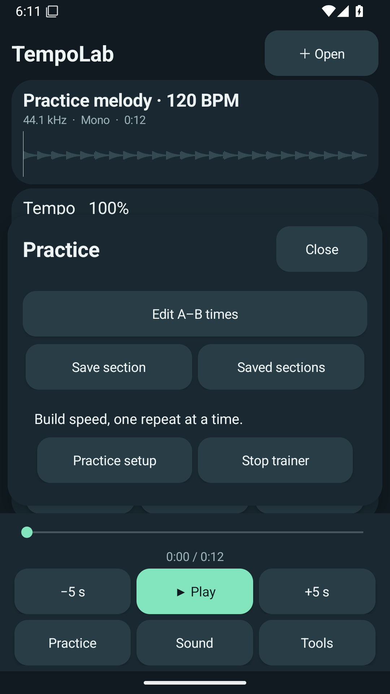
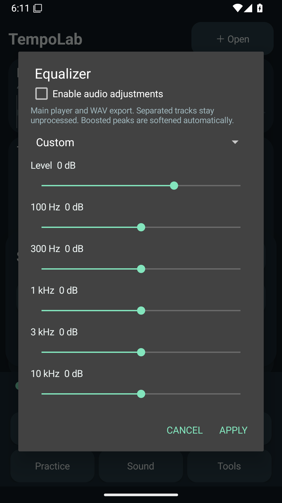

PRAXIS SCIENCE LAB / ANDROID
TempoLab
Your music. Your pace.
Preparing for testing Not yet available on Google Play.
TempoLab helps you practice local recordings at your own pace. Adjust tempo from 50% to 200% independently of pitch, transpose by up to 12 semitones, and repeat a precise A–B section.
Save named sections and increase speed gradually as you practice. A five-band equalizer and level control shape the main playback and WAV export. Playback continues in the background and with the screen off.
Separate a 0.5–20 second section into voice and instrumental tracks on your device with the bundled Spleeter model. Compare and export the results. Separation can contain audible artifacts and is intended as a practice aid. Keep the app open while processing; leaving cancels the operation.
English is the default language; Romanian and Spanish are available. Supports Android 10 and later on ARM64 devices, mono/stereo audio and imports up to 30 minutes / 512 MB decoded. No account is needed. The current signed version has commercial advertising disabled.
Inside TempoLab



Developed by Praxis Science Lab. Contact traiananghel@gmail.com.